| 日付 | 2010年10月27日（水） |
|---|---|
| 山域 | 富士山周辺 |
| メンバー | 単独 |
| 山行形態 | 日帰り |
| アクセス | 電車、バス |
| ルート (Map) | 鳥屋→愛鷹山→位牌岳→越前岳→十里木 |
愛鷹山はいくつものピークが連なる連峰の形をとっている。
ほとんどの登山者は、その中の最高峰である越前岳にしか登らないが、
南方にも顕著なピークがいくつかあり、愛鷹山という名前の付いたピークも存在する。
愛鷹連峰を南北に貫く稜線は、風化が進んだ岩場が続く難所であり、
さらに長雨の影響で、登山道は長い間閉ざされたままだ。
以前、愛鷹山を訪れた時からこの稜線は気になる存在だった。
晴れの日の一日、この稜線を南から北に縦走してみることにする。
8:28 鳥屋バス停到着。標高10m。
裾野の広い愛鷹山だが、完全な下界から歩き始める必要がある。
とにかくこの山はアクセスが悪い。
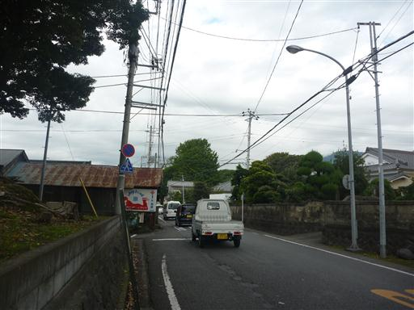
道すがらにある赤野山廣大寺。茶畑の中にあるなかなか立派な寺だ。
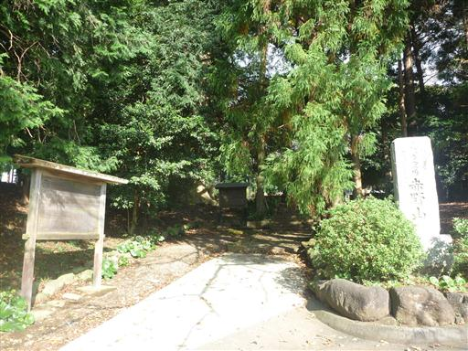
本堂。一本のカヤの木が大きく枝を伸ばしている。推定樹齢は600年だそうだ。
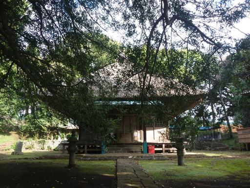
工事中の新東名高速道路を渡る。
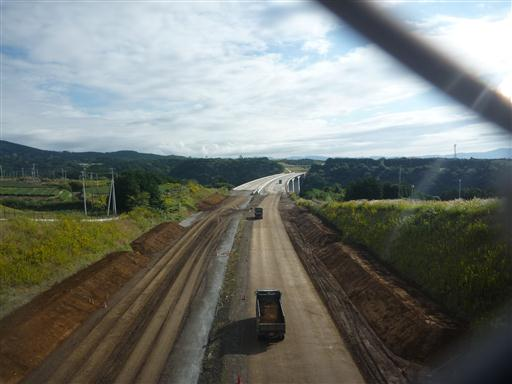
どこまでも広がる茶畑の斜面を登っていくと、背後に駿河湾が見えてきた。
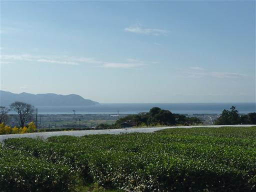
ゴルフ場の脇の道を歩いていく。道路にはネットが張られており、あらゆるネットにボールが引っ掛かっている。
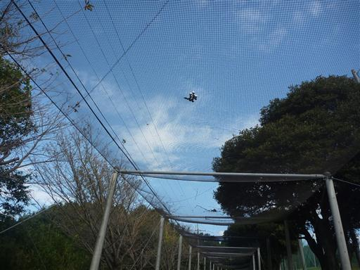
ゴルフ場の入口付近。素晴らしい展望のゴルフ場だ。
ボールが駿河湾まで飛んでいきそうに感じる。
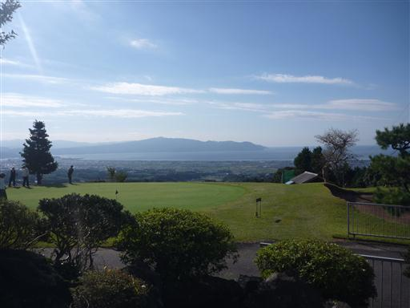
ゴルフ場を過ぎるとだんだんと道が細くなって行き、車道ではなくなってしまう。
この辺りは道が入り組んでいるため正しいルートを選択するのがなかなか難しい。
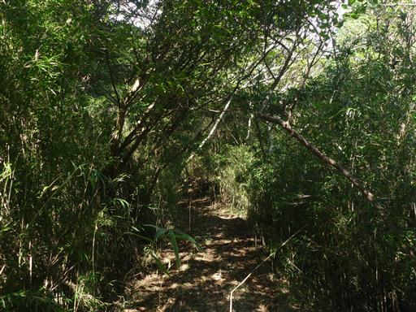
歩くこと2時間、車道と交差したところでようやく愛鷹山の標識を見つける。
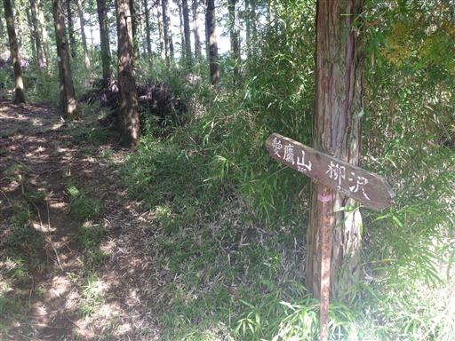
愛鷹山の方は曇っているが、海側はきれいに晴れ渡っている。
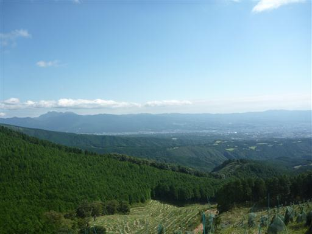
水飲み場。水は枯れていて全くない。
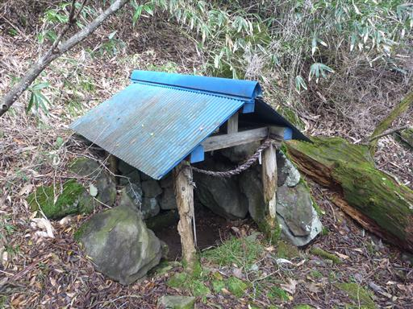
11:55 愛鷹山山頂到着。標高1188m。
連峰最高峰ではなく端の方にある小さなピークなのだが
愛鷹連峰はこの山の名前をとっている。
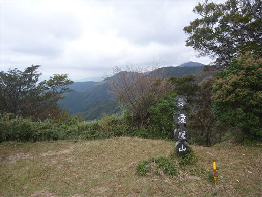
縦走する袴腰岳方面を望む。愛鷹連峰中心部は雲が出ている。
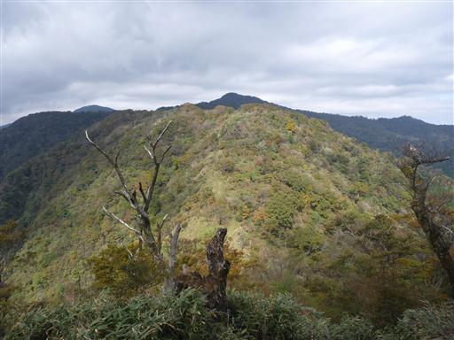
ヒメシャラの木。伊豆近辺でよく見かける木だ。
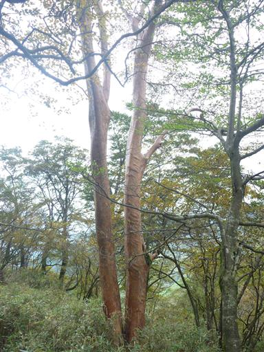
この辺りはブナの木も多い。森の雰囲気も伊豆とよく似ている。
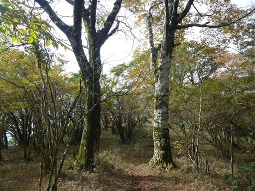

大木、苔むした倒木など、このあたりの雰囲気は非常に良い。
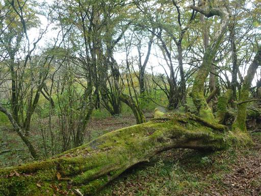
袴腰岳に到着。平日だが、ここで2名の登山者と出会う。
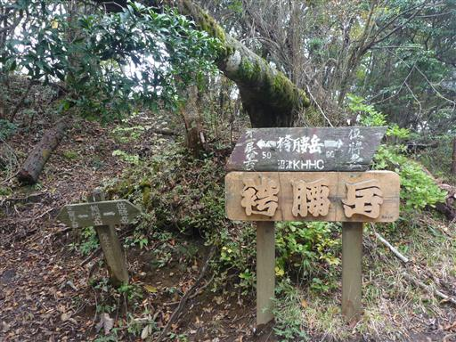
ここから先も美しい森が続く。愛鷹山の自然はよく保存されている。
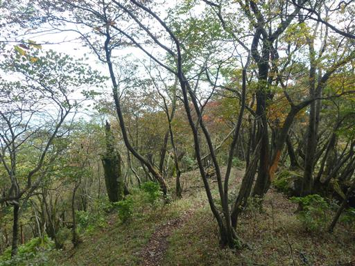
一服峠。コースタイムが記載されているが「60才のコースタイム」と書かれると
少しプレッシャーを感じる。
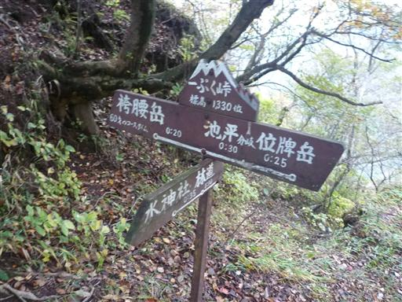
標高を上げると、紅葉している木が出てくる。
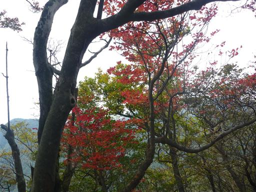
遠くから見ると穏やかな愛鷹山も、近づくと崩壊が進んだ急峻な地形がたくさんある。
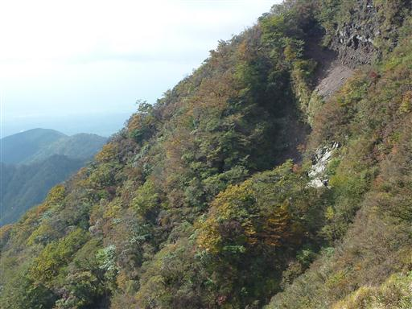
13:41 位牌岳山頂到着。標高1457m。
愛鷹連峰南部の主峰だ。
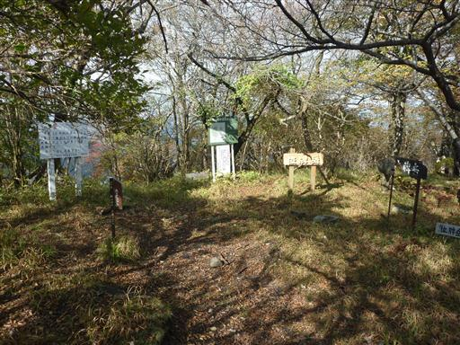
ここから先は登山道が閉鎖されている。今回はここを乗り越えていく予定。
崩壊してずいぶん経つので、そろそろ整備をして欲しいところだ。

越前岳に続く、険しそうな尾根が続いているのがよく見える。
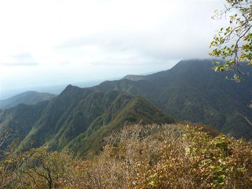
ずいぶん長い間閉鎖されている登山道だが、踏み跡は比較的しっかりしている。
閉鎖はされていても魅力的な道は歩く人がいるのだろう。
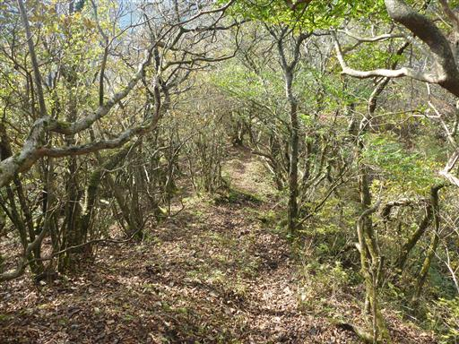
おいしそうなキノコがたくさん生えている。
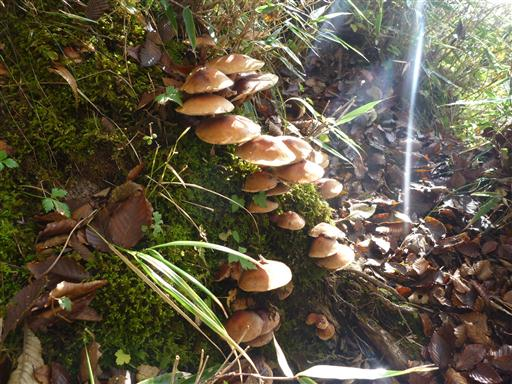
道はだんだん険しくなり、鎖場が連続するようになる。
整備されていない道の鎖は使う気になれないが、
所々で鎖を掴まないと通れない場所がある。
鎖を引っ張って確かめつつ、少しずつ歩を進めていく。
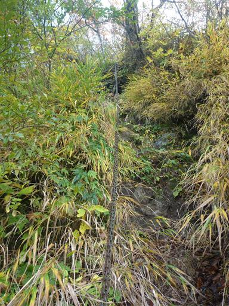
急斜面のトラバース道。この辺りは草が覆いかぶさっていて歩きにくい。
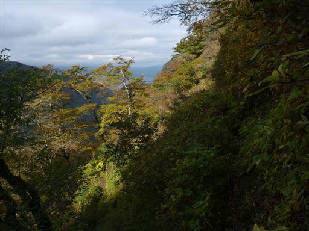
比較的新しそうな鎖も見られる。通行止めにしていても整備はしているのだろうか？
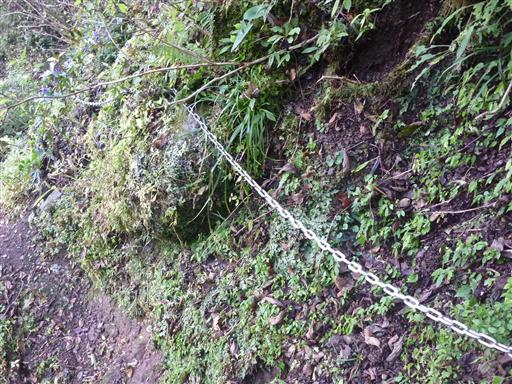
駿河湾が太陽に照らされて光っている。素晴らしい展望だ。
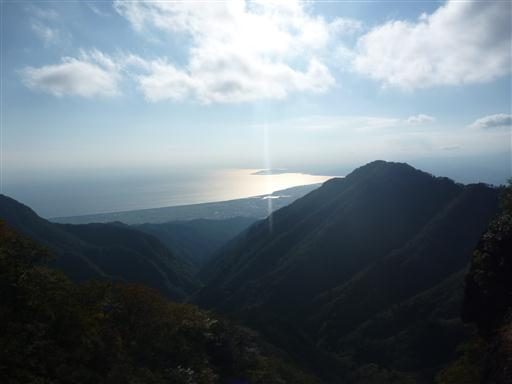
この辺りが縦走路の核心部。ここまで来てしまうと、
通れないところが出てきたときに引き返すのが億劫だ。

越前岳はもうすぐ近くだ。はやりこの山は大きく主峰の風格がある。
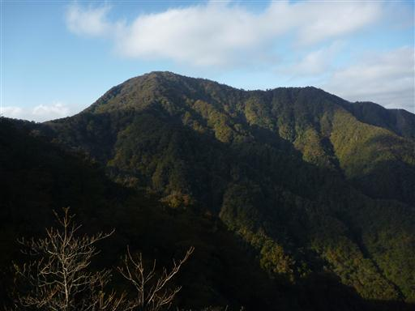
鋭いV字谷。この隙間を抜けていく。
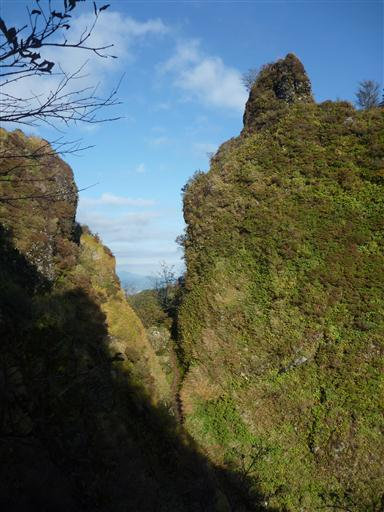
見上げると並び立つ岩峰。風景はどことなく妙義と似ている。
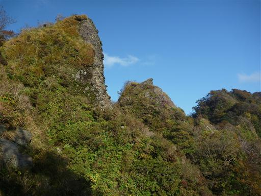
蓬莱山に到着。これで危険地帯は終わりだ。
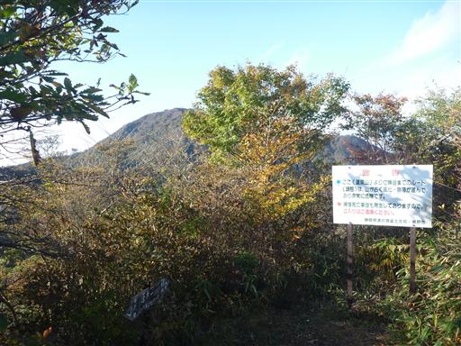
足元には地蔵が置かれている。
危険な稜線を無事突破できるよう祈願するために置かれているのだろうか？

振り返ると歩いてきた稜線、その向こうに位牌岳がそびえている。
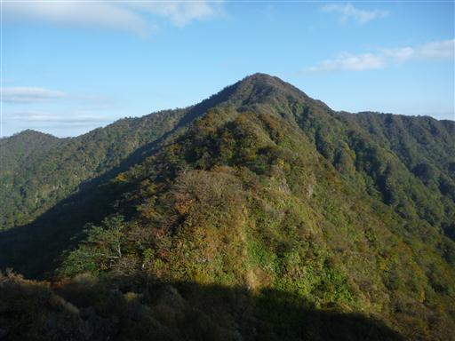
一瞬雲が消えて、わずかに富士山が頭を出す。
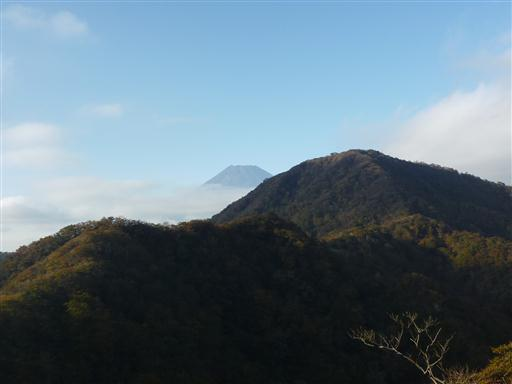
16:04 越前岳山頂到着。標高1504m。
今回のルートは累積の登りが2000m程度で疲れ果てた。
北上ルートではなく南下ルートにしておくべきだったと後悔。
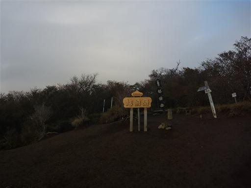
下山路は前回、越前岳に登った時には使わなかった十里木への道を選択。
目の前に広がる富士の姿は再び雲の中だ。
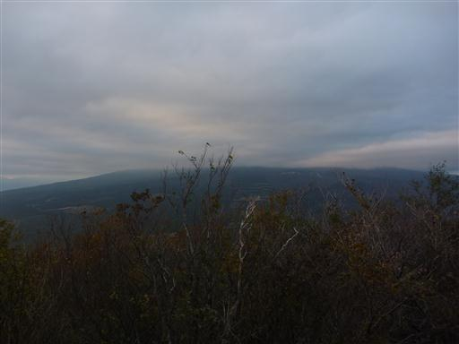
まだ4時半だというのに、太陽の光は横から差している。
しばらく山に行かないうちに日が短くなってしまった。
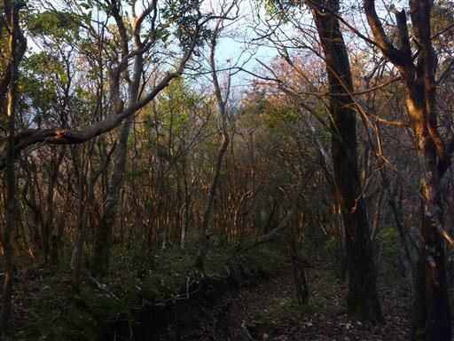
西の方角に夕日を望む。日没まではまだしばらくかかりそうだ。
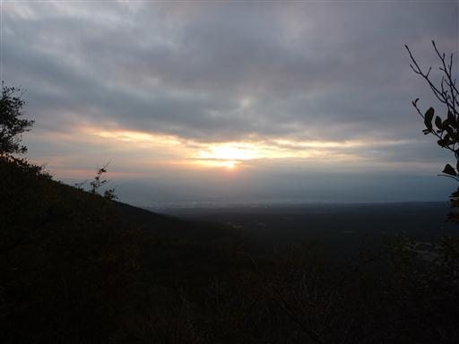
開放感があり、晴れていれば絶景が広がるだろう場所だ。
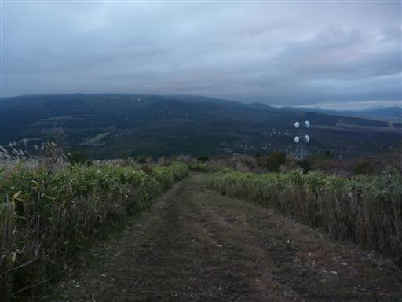
ススキの原が広がっている。
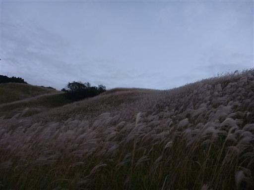
下山。そばにある十里木高原バス停は、調べてきた時刻表と全然違うので少し焦ってしまう。
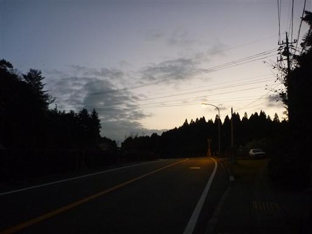
17:16 5分ほど歩くと目的の十里木バス停に到着する。標高880m。
歩いてみたかった愛鷹連峰の縦走路は、噂に違わぬ素晴らしい登山道だった。
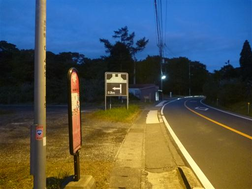